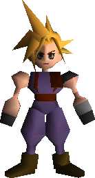
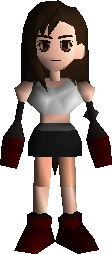
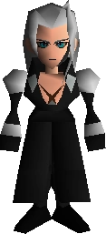

Final Fantasy VII (ファイナルファンタジーVII Fainaru Fantajī Sebun?) es un videojuego de rol desarrollado y publicado por la empresa Square para la plataforma PlayStation. Publicado en 1997, se trata de la séptima entrega de la serie Final Fantasy y la primera de la saga en presentar gráficos tridimensionales, mostrando personajes completamente renderizados sobre escenarios prerrenderizados. El argumento de Final Fantasy VII se centra en el protagonista Cloud Strife, un mercenario que inicialmente se une al grupo ecoterrorista AVALANCHA para detener el control mundial de la corporación Shinra que está drenando la vida del planeta para usarla como fuente de energía. Conforme la historia avanza, Cloud y sus aliados se ven envueltos en un conflicto que representa una amenaza aún mayor para el mundo, enfrentándose a Sefirot, el antagonista principal del juego.
| Personaje | Imagen | Descripcion |
|---|---|---|
| Cloud Strife |  |
Cloud Strife es un personaje central de los títulos de Compilation of Final Fantasy VII, siendo el protagonista principal de Final Fantasy VII y su remake |
| Tifa Lockhart |  |
es un personaje principal y jugable de Final Fantasy VII. Experta en artes marciales, Tifa es una miembro del grupo resistente conocido como AVALANCHA, con el objetivo de acabar con la Compañía de Energía Eléctrica Shinra |
| Sefirot |  |
Sefirot (Sephiroth en inglés, セフィロス, Sefirosu en japonés) es el antagonista principal de Final Fantasy VII, y uno de los antagonistas más relevantes de su universo expandido. |